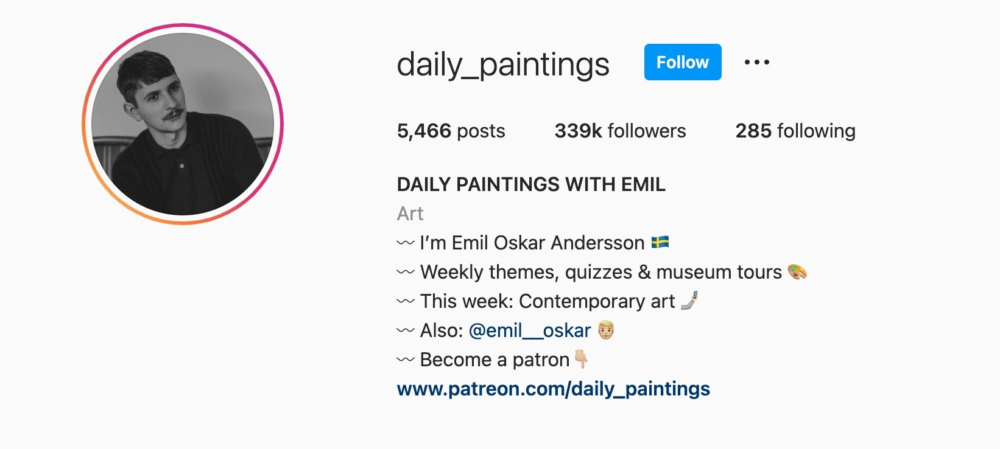

Marie
Westbrook
editorial associate
Go to Marie’s pick


It’s not often a book moves me to tears as it propels me through the story. I flew through By Way of Sorrow, an engaging and moving story about a transgender lawyer who represents a young transgender sex worker accused of murdering a high-profile politician’s son. The author is also transgender and has been honored by the ACLU-NJ for her work with the transgender community. She has a wonderful voice and knows how to keep a reader hooked. I can’t wait to read the next chapter in this series.
Jen Bulat
production director
Go to Jen’s pick
KC Esper
editor
Go to KC’s pick

A while back, I found the Instagram account daily_paintings run by Emil Oskar Andersson, which, as you might expect, posts a painting every day, following a weekly theme. Emil has great insights about art styles, artist influences, and the history surrounding a piece. He also regularly travels to museums around Europe to report back his thoughts and curates “guess the artist” quizzes on his Instagram story. He’s great at engaging with his followers and answering questions about both his own love of art and artists and paintings themselves.
I'm no art buff, but I’ve had a lot of fun learning from this account. It’s a good survey of art from around the world and work from Renaissance-era painters to contemporary artists. I think there’s something there for anyone who enjoys art—or at least seeing something a little different on their Instagram timeline.

I’m still unapologetically devoted to American Idol, which is the only redeeming thing about Sunday night these days. Fortunately, my colleagues have better taste than I do, and I love to see what they’re up to. Particularly when they’re recommending something that’s “a bubble bath for your brain.” Yes, please! I’ve also never been disappointed by a Jen B pick; read on for the latest from her and others, including our current favorite podcasts.
I’m not typically a “gamer,” but I love Hue is the most gentle and satisfying puzzle-style game I've played. The goal of the app is to arrange mosaics of colored tiles into different gradients. It’s a test of perception, but it’s incredibly low stakes, so it’s more like a bubble bath for your brain than it is a game. Perfect for a train ride or a midday break—or any instance where you need to kill time.

Tracy Morris
people manager
I am guilty of binge-watching all the seasons of Columbo starring Peter Falk. It’s my go-to show when I need to decompress. The show is full of ah-ha moments, thanks to the uncanny wit of Columbo’s detective skills, and I find myself rewatching episodes to see what clues I didn’t pick up on the first time.
Go to Tracy’s pick

Our current favorite podcasts

George:
Huberman Lab
Delilah:
The Always
Sunny Podcast
Annie:
The Daily
Karen:
No Stupid Questions